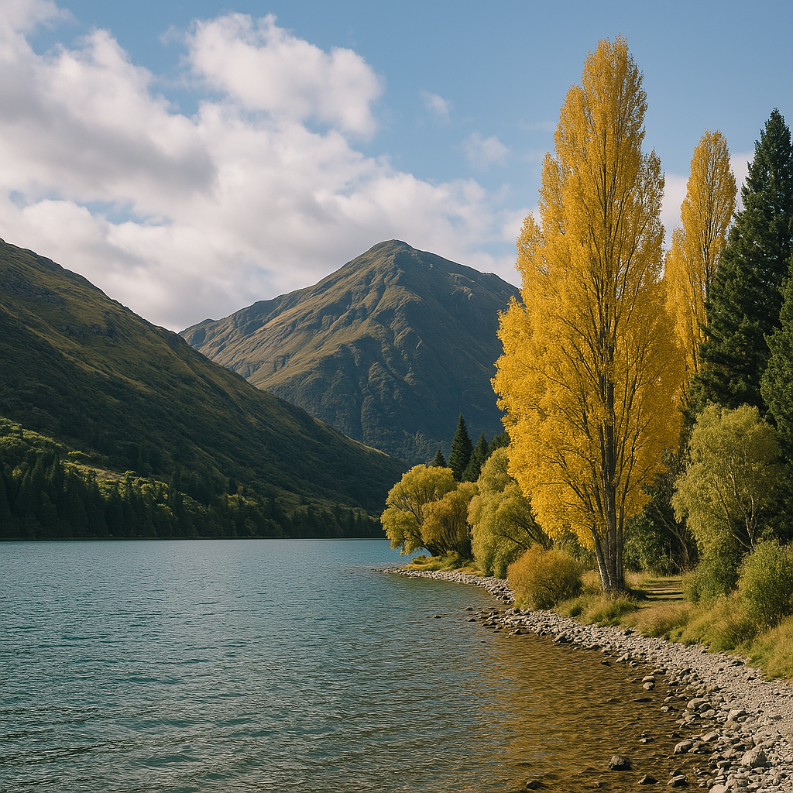

<main class="py-16 bg-white">
  <div class="max-w-4xl mx-auto px-4">
    <article class="prose prose-lg">
      <h1 class="text-3xl font-bold text-blue-800 mb-4">5 Hidden Gems di New Zealand</h1>
      <p class="text-sm text-gray-500 mb-8">Ditulis oleh Garuda Kiwi Tour • 4 April 2025</p>
      
      

      <p>New Zealand memang terkenal dengan Queenstown, Rotorua, dan Hobbiton. Tapi di balik itu, masih banyak permata tersembunyi yang layak dikunjungi. Berikut ini 5 hidden gems pilihan kami:</p>

      <h2 class="text-2xl text-blue-700 mt-6">1. Lake Marian (Fiordland)</h2>
      <p>Sebuah danau alpine dengan air sebening kristal, terletak di balik jalur hiking hutan lebat. Cocok buat pencinta alam!</p>

      <h2 class="text-2xl text-blue-700 mt-6">2. Nugget Point Lighthouse (Otago)</h2>
      <p>Pemandangan dramatis di tepi tebing dengan mercusuar klasik yang menghadap Samudera Pasifik.</p>

      <h2 class="text-2xl text-blue-700 mt-6">3. Castle Hill (Canterbury)</h2>
      <p>Formasi batu raksasa di tengah padang rumput—sering disebut sebagai \"Stonehenge-nya New Zealand\".</p>

      <h2 class="text-2xl text-blue-700 mt-6">4. The Blue Pools (Haast Pass)</h2>
      <p>Jembatan gantung yang mengarah ke kolam biru jernih—ideal untuk foto Instagram!</p>

      <h2 class="text-2xl text-blue-700 mt-6">5. Glenorchy (dekat Queenstown)</h2>
      <p>Desa kecil yang tenang dengan latar pegunungan. Spot terbaik untuk sunrise dan lokasi syuting Lord of the Rings.</p>

      <div class="bg-yellow-100 border-l-4 border-yellow-500 p-4 mt-8 rounded">
        <h3 class="text-xl font-semibold text-yellow-700">🚐 Mau Jelajahi Hidden Gems Ini Tanpa Repot?</h3>
        <p>Ikuti <strong>paket tur South Island eksklusif</strong> dari Garuda Kiwi Tour. Kami akan bawa kamu ke tempat-tempat ini dengan nyaman.</p>
        <a href="detail-southisland.html" class="inline-block mt-2 bg-blue-600 text-white px-4 py-2 rounded hover:bg-blue-500">Lihat Paket Tur</a>
      </div>
    </article>
  </div>
</main>
